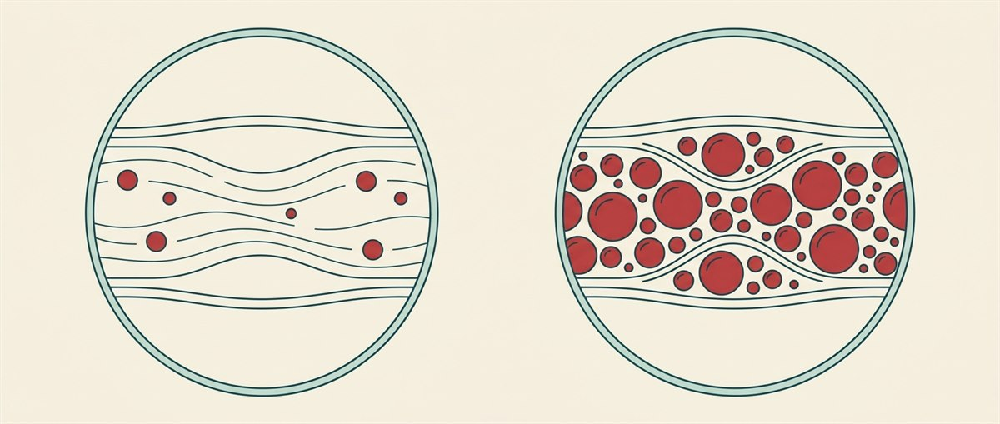

什麼是三酸甘油酯？
三酸甘油酯（triglycerides）是血液中一種「脂肪」，是身體重要的能量來源。它有兩個來源：一是吃進來的油脂（如奶油、食用油），二是沒用完的多餘熱量——身體會把它轉成三酸甘油酯儲存起來備用。它在血液中由脂蛋白運送。
高三酸甘油酯血症（hypertriglyceridemia）就是血中三酸甘油酯過高。它和膽固醇是不同的血脂項目（膽固醇請見膽固醇衛教），但兩者都會影響心血管健康。

數值怎麼看？
三酸甘油酯以毫克／分升（mg/dL）表示，通常需空腹抽血檢測（見下方診斷）。成人分級如下：
| 分級 | 空腹三酸甘油酯 (mg/dL) |
|---|---|
| 正常 Normal | 低於 150 |
| 邊緣偏高 Borderline | 150 – 199 |
| 偏高 High | 200 – 499 |
| 非常高 Very High | 500 以上 |
※ 10–19 歲兒童青少年的空腹值應低於 90 mg/dL。單次數值偏高不等於確診，應由醫師結合整體血脂與風險判斷。
高三酸甘油酯其實很常見：美國約每 5 位成人就有 1 位數值高於 150 mg/dL；而且隨年齡上升——60 歲以上約 42%。
為什麼要重視？
1. 非常高（≥ 500 mg/dL）會引發急性胰臟炎。三酸甘油酯太高時，可能造成胰臟發炎（acute pancreatitis）——這是會劇烈腹痛、需要緊急就醫的急症。數值越高（尤其超過 1,000），風險越大。
2. 偏高會促進動脈粥狀硬化。長期偏高會助長血管硬化，提高心臟病與中風的風險——若同時合併低 HDL 或高 LDL，風險更高。它也常與代謝症候群相伴出現。
2. 偏高會促進動脈粥狀硬化。長期偏高會助長血管硬化，提高心臟病與中風的風險——若同時合併低 HDL 或高 LDL，風險更高。它也常與代謝症候群相伴出現。
症狀
大多數人沒有症狀，通常是抽血才發現。只有在非常高時，皮膚可能出現黃色瘤（xanthomas）——眼皮、膝、肘或手掌等處的黃色脂肪突起。
成因
原發性（遺傳）
- 家族性高三酸甘油酯血症——單純三酸甘油酯偏高
- 家族性混合型高血脂——三酸甘油酯高、LDL 高、HDL 低
- 家族性乳糜微粒血症——三酸甘油酯可超過 1,000 mg/dL
次發性（後天）
- 飲食與生活型態：過量飲酒、高糖與精緻澱粉、高飽和脂肪、久坐少動
- 疾病：肥胖、糖尿病控制不良、胰島素阻抗、甲狀腺低下、腎臟病、肝病、代謝症候群等
- 藥物：類固醇、口服雌激素、tamoxifen、非選擇性乙型阻斷劑、利尿劑（thiazide）、部分抗精神病藥與 HIV 蛋白酶抑制劑等
- 女性：更年期、懷孕（尤其第三孕期）
診斷
- 血脂套組（lipid panel）——抽血同時測三酸甘油酯與膽固醇。
- 通常需空腹 10–12 小時（期間只喝水），數值才準確。
- 醫師也會評估家族史、生活型態、用藥與整體心血管風險。
治療
治療以生活型態調整為基礎，數值很高或風險高時再加上藥物。
生活型態（第一線）
- 減少糖與精緻澱粉（含含糖飲料）——這是降三酸甘油酯最有效的一步
- 限制或戒除酒精
- 增加 omega-3（深海魚類）、以健康油脂取代飽和與反式脂肪
- 規律運動、減重（減少總熱量）
藥物（必要時）
- Fibrate 類（如 fenofibrate）——降三酸甘油酯的主力，尤其用於預防胰臟炎
- 處方級 omega-3（如 icosapent ethyl）
- 史他汀（statin）——同時處理膽固醇與心血管風險
- 治療共病：控制糖尿病、甲狀腺低下、腎/肝病、肥胖，並調整會升高三酸甘油酯的藥物
預防
什麼時候該就醫？
出現以下情況請立即就醫或撥打 119：
- 急性胰臟炎——持續且劇烈的上腹痛（可能延伸到背部）、噁心嘔吐
- 心臟病發作或中風的症狀